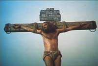

|
|
非常欢喜能够再到青宣大会，与台北和台湾各地的青年人一同思想主的话语。有哪一个人参加过过去的青宣的，请举手？手放下。
我在这几天要思想的是关于福音神学的本质（ Thes Essence
of Gospel ）的问题。 今天有许多所谓传福音的人，已经失去了对福音本质的认同。今天的许多所谓传福音的人，慢慢放弃了对福音本质很严肃的坚持。
|
所以，在传福音的事工上就开始放松，开始偏离正义，就开始妥协，开始寻找一个综合的理论。
福音是什么？应当是非常的、基础性的成为我们继续不断探讨和坚持、继续不断遵守的一个前提。福音是什么？福音的本质是什么？
我们来看几处的圣经：我们先看哥林多后书第十一章第二节至六节：「我为你们起的愤恨，原是上帝那样的愤恨；因为我曾把你们许配一个丈夫，要把你们如同贞洁的童女，献给基督。我只怕你们的心或偏于邪，失去那向基督所存纯一清洁的心，就像蛇用诡诈诱惑了夏娃一样。假如有人来，另传一个耶稣，不是我们所传过的；或者你们另受一个灵，不是你们所受过的；或者另得一个福音，不是你们所得过的；你们容让他也就罢了；但我想，我一点不在那些最大的使徒以下。我的言语虽然粗
俗，我的知识却不粗俗；这是我们在凡事上，向你们众人显明出来的。」（哥林多后书：11
章 2-6 节）
「我曾把你们许配一个丈夫，要把你们如同贞洁的童女，献给基督。」使你们的心不要偏邪，使你们的心像基督，仍然存着一个纯洁，清洁的心 (The simplicity of your heart)。纯一，清洁的 (The simplicity of your
heart)。 在这里保罗提到了，不能接受另外一个福音，不能接受另外一个灵，我们要保持那纯一、清洁对耶稣基督的认识；传那纯洁的耶稣基督的福音。
这个福音，传传传.... 传到一个时代，变成许多已经感到太习惯听，而开始厌烦的事情，但是还是要传下去。当末世的时候，众人对这纯洁的福音产生厌烦，耳朵发痒的时候，
就增加了许多师傅（参：提摩太后书：4 章 3 节）；但是我们要坚持把那纯洁的福音传下去，因为没有别条路使人可以回到上帝那里去（参：使徒行传：
4 章 12 节）。
我们再看几处的圣经：使徒行传第十五章第一节、第二节：「有几个人，从犹太下来，教训弟兄们说：「你们若不按摩西的规条受割礼，不能得救。」保罗、巴拿巴与他们大大的分争辩论，众门徒就定规，叫保罗、巴拿巴和本会中几个人，为所辩论的，上耶路撒冷去，见使徒和长老。」
我们大家一同念第二节，一、二、三「保罗、巴拿巴与他们大大的分争辩论，众门徒就定规，叫保罗、巴拿巴和本会中几个人，为所辩论的，上耶路撒冷去，见使徒和长老。」
我们大家再来看一处的圣经，犹大书第三节、四节：「亲爱的弟兄阿！我想尽心写给你们，论我们同得救恩的时候，就不得不写信劝你们，要为从前一次交付圣徒的真道，竭力的争辩。因为有些人偷着进来，就是自古被定受刑罚的，是不虔诚的，将我们上帝的恩变作放纵情欲的机会，并且不认独一的主宰我们我们，或作和我们主耶稣基督。」
我们大家一同来念第三节：「亲爱的弟兄阿！我想尽心写给你们，论我们同得救恩的时候，就不得不写信劝你们，要为从前一次交付圣徒的真道，竭力的争辩。」
这节圣经的意思可以这样翻译，「亲爱的，我已经尽心预备了，要把福音的神学，或者我们关于一同得到的救恩的论据写给你们。但是我现在受逼，里面有个负担，不得不改变我的计划，且叫你们要为真道，就是曾经已经一次完全交托给圣徒的那个真理的信仰，要你们竭力的争辩。」我们读经就到这个地方。
在这三处的圣经里面，有一个相同的地方，就是「持守福音的本质，不能妥协」；在这三处圣经里面有一个相同的精神，就是「为这个本质，我们要付代价去持守它」；如果我们在本质上有所放松的话，我们不可能不产生一个同流合污的结果。
大凡所有的运动，当不能再持守原先的本质的时候，就开始松懈，就开始败退。大凡一个伟大的运动 ，已经放弃了原先的准则，原先的本质的时候，这个运动就开始走向末落的道路。
今天我们看所谓「福音派」的教会，他们很热心传福音，但是有很少很少的人很清楚的对福音神学、福音的本质做很深的、很坚持的，做很积极的奋斗。所以我看到整个世界上传福音的大工，如果没有来一个从本质上的复兴的话，一定是面对一个很可怕的将来。如果我们徒有外表，有火热，有感情，有行动
，甚至用许多不同的花样来传福音；我们把许多方法论都研讨完了，但是我们的本质却放松了，我们乃是在上层的建筑继续发展，而忽略了下层的发展的根基已经正在毁坏。所以，对福音的本质，再需要一次愿主的灵在�k圣经启示的道里面光照我们，使我们得回我们信息的中心到底是什么？
在我过去的这几年的事奉中间，我看见许多许多人把一些比较次要的看法当做是重要的，以后他们就慢慢的放弃了那更重要的事情了。什么叫作「把比较次要的当做重要的呢？」有许多人认为，「只要传福音，不管他传得多好，传得对不对？只要耶稣的名传开就可以了。」这样的一种看法对不对呢？如果只要耶稣的名传开就可以了，那么耶稣基督，为什么圣经特别提到，他是「拿撒勒人耶稣」呢？因为「耶稣」这个名称当时是一个共享的名称；是一个许多人要把孩子取成的一个名称，就是旧约里的「约书亚」，新约的「耶稣」，意思就是「救世主」的意思。今天在菲律宾还有许多人的名字叫「耶稣」，是菲律宾式的「耶稣」，是菲律宾民族里的「耶稣」。但保罗特别注名，这是「基督耶稣」、「拿撒勒人耶稣」、「上帝的儿子耶稣」、这表示，「只要把耶稣的名传开」的这种思想，远远不够严肃提到那位我们所传的耶稣到底是谁？我们「奉拿撒勒人耶稣的名」，就是清楚这位耶稣，是圣经里面那「道成肉身」的耶稣，不是普通的一个耶稣。保罗也提到了「主耶稣」，耶稣是「主」！这位拿撒勒人耶稣、这位基督耶稣是主，是上帝。
|
所以，所传的这个，不是单单传一个外表认为是相同的东西，乃是里面有神性
、道成肉身、神人二性的基督，这样的基督论传出去才是对的。所以我认为，只要提到传福音我们就很欢喜，而不提到在福音中间那神学思想是怎么样的，那个教义基础对不对，这一种的福音运动
，不是圣经里面给我们看到的。
|

|
圣经给我们看见传福音的保罗本身是对教义、对基督深奥的奥秘、对神的思想和知识有测不透丰盛奥秘的认识的。所以他是一个神学性
的布道家，是一个布道性的神学家。如果你要把保罗归纳成他只是一个神学家，而不是一个布道工作者，圣经是不赞同我们这么分法的。或者你把保罗归纳成为一个传福音的人，却不是一个神学研究的人，圣经也没有给我们看见这种是许可的。我们看见保罗是一个神学性
的布道家，是一个布道性的神学家。保罗是一个把耶稣基督活出来的人，也是一个把耶稣基督传出来的人。在他的生活中间，他传出了他所活出的基督。在他所传的信息中间，他活出了他所传的基督。所以，他把所活的基督传出来，把所传的基督活出来，这样一位神学家，不但是理论上认识上帝，不但是口头上传扬基督，更是在生活上印证他所信，他所传的。在这里给我们看见三样的东西合一──神学、事奉、生活的合一。
如果他只有神学的知识， 只有对神的认知（ Theology is knowing
God. The knowledge of God is according to the revelation of
God, initiated by God Himself. ）对神自我启示的这个系统认识的知识叫作「神学」。凡是否定启示论的人，这些人的神学都是「人学」，不是「神学」。认知启示自我的上帝，在�k的启示中间认识�k，产生的一套对神知识的系统这个神学的人，这样的一个人，他需要把神系统中间对神知识中间神旨意，要化成历史行动
的爱心生活表现出来。所以，我们一方也研究对神的知、认识；一方面在对�k的知中间，行出�k要我们行的实践，然后在我们整个计划的中间把这些传扬出去。保罗是一个神学家，保罗是一个布道家，保罗是一个耶稣基督生活的代表
---- 「我活着就是基督，我死了就有益处」（参：腓立比书：1 章 21 节），他活出了他所传的基督，他传出了他所活出的基督。他所信的，他传出来，他所生活的，他传出来；他所知的，他生活出来。
保罗在福音工作上，他继续不断注意一件事情，就是这个福音的本质，不能有任何的搀杂。我们的上帝是圣洁的上帝，「圣洁」这个字里面就包含了没有搀杂，没有污染，没有玷污的那纯洁（ simplicity, purity ）的意思；这里面的意思就是那纯洁的、单一的本质。 我们的上帝是圣洁的上帝，我们的上帝是纯洁的上帝，我们的上帝是独一的上帝。只有�k是圣洁的，「唯独神至尊，至圣」，唯独上帝是圣洁的。所以这个圣洁和纯一性
也就连在上帝了。
十九世纪丹麦的一位神学家， 也是一位哲学家祁克果（ Soren Kiekegaard,
1813-55 ）他讲一句话：「 Pure heart is one heart man. A pure heart
man 」──「一个清心的人， 就是一个专一心志的人」。这样，他在圣经当中看到一个很重要的圣洁观念，就是那圣洁与纯一不可分开。照样，我们一定要把我们心里面各样的搀杂除掉，使我们对福音的认识，是圣洁的，是纯一的信仰。所以保罗说，「我把你们如同贞洁的童女，许配给耶稣基督。要叫你们保守那圣洁、纯一的心，免得你们接受了另外一个福音，你们领受了另外一个灵与你们所领受的福音不一样，与你们所领受的灵不一样。」这表示这福音的本质需要坚持下去。
第二样、我们看见现在有许多人把那个次要的当作重要的，在福音运动 中间产生许多模糊和不能负责任的事情。所以我们看见有许多的人，就把福音加上其它的工作连在一起。有一次我在新加坡三一神学院讲学差不多五个礼拜的时间，我讲福音神学。有一次我讲完了以后，有一个学生他站起来问我，「为什么你不提到社会的行动
呢？为什么你不提到社会的关怀呢？为什么你不提到关于在世界上怎样对穷人尽责任，这是福音的工作。」我说，「是！这是福音的"果效"，这不是福音的"本质"。」把福音的「本质」和福音的本质所能产生出来的「果效」混在一起，是不对的。把「福音」和「福音的预工」混在一起，
也是不对的。 Pre-Evangilism, Evanglism, and Post-evanglism 这是三个不同的阶段。
「福音的本质」，是福音的本体里面的性质，而「福音的预工」是为了使人能够预备心领受福音的那些工作，这个叫作「福音的预工」。而「福音的果效」，是传了福音以后，福音怎么样产生福音的果子。「悔改」与「悔改的果子」是不一样的。悔改的心是内在的，悔改的果子是外表的。悔改的心是里面的本质，悔改的果子是外面产生出来的果效。福音的果效与福音的本质应当分开，正像福音的预工与福音的正工也需要分开一样。所以我们看见有许多的福音工作，它们就模糊了，把这些混杂在一起。
在新派的神学思想里面，他们提到差传，提到福音使命的工作。他们所用的圣经根据，是耶稣基督在还没有开始整个弥赛亚大工以前，在以赛亚书念到的一段圣经引证自己就是耶和华的灵所差来的那一位所所用的话语，那是记载在路加福音第四章，我们大家来看。
|
|
路加福音第四章第十七节至二十一节：「有人把先知以赛亚的书交给他，他就打开，找到一处写着说：「主的灵在我身上，因为他用膏膏我，叫我传福音给贫穷的人；差遣我报告被掳的得释放，瞎眼的得看见，叫那受压制的得自由，报告上帝悦纳人的禧年。」
|
于是把书卷起来，交还执事，就坐下；会堂里的人都定睛看他。耶稣对他们说：「今天这经应验在你们的耳中了。」
这一段圣经，「主的灵在我身上，因为他用膏膏我，叫我传福音给贫穷的人；差遣我报告被掳的得释放，瞎眼的得看见，叫那受压制的得自由，报告上帝悦纳人的禧年。」这是新派的人对传福音的工作很喜欢引用的一段圣经的根据。所以他们认为什么叫作「传福音」？就是去告诉人被掳的得释放，去告诉人瞎眼的得看见，去告诉人受压制的得自由，到处去告诉上帝已经喜悦人，现在是上帝喜悦人的禧年了。但是福音派的很难用的一段圣经是马太福音第二十八章第十八节：「耶稣进来，对他们说：「天上地下所有的权柄都赐给我了。所以，你们要去使万民作我的门徒，奉父子圣灵的名，给他们施洗，凡我所吩咐你们的，都教训他们遵守，我就常与你们同在，直到世界的末了。」
哪一段圣经应当是我们传扬的基础呢？耶稣基督刚刚到世界上来，耶稣基督刚刚执行他弥赛亚工作的时候，他引证了以赛亚的那一段话说：「我就是那位被差遣的报好信息的人。」这一段是我们今天传福音的一个圣经基础吗？或者是耶稣基督对门徒说，「你们去，因为天上地下所有的权柄都给我了。你要使万民做我的门徒，我就与你们同在直到世界的末了。」这是我们传福音的基础吗？福音派的人说就是「大使命」（ Great Comission ）我认为这个名称还不够大， 应该叫做「 the Greatest Comission 」，
最大的使命， 不但是 Great Commission，大使命不够「大」。
我们台湾人很多大大大，五个房间的叫作「大旅馆」，很多大王：牛肉面大王；什么大王....。现在世界上的王越来越少，还有一大堆的「大王」在台湾。中国人常常把口里面讲大就以为自己很「大」了，这实在是有阿Ｑ精神。联合国大会，很少用「大」那个字，很多大旅馆，
很少用「大」那个字。 Hilton （希尔顿）就是 Hilton 不是Great Hilton。我们五、六个房间的旅社就叫「大旅社」，真是不好意思。但是这是真正「大」。为什么？最大的主权，最大的权柄，最大的差遣，最大的工场，最大的使命，最大的信息，最大的赦罪恩典，最长久性的价值──福音。这是真正最大的
The Greatest Commission by Jesus Christ！不同的地方是当耶稣基督刚出来传道的时候，他讲的话提到这个新的时的代，也就是借着基督所成全的福音，要使人得着释放的这个「宣言」已经通告出来了。但是当耶稣基督说，「到普天下去传福音给万民听，使万民都作我的门徒的时候。」这是他从死里复活经过十字架、流血舍命、受审判、进到坟墓里面、从死里复活得胜了那掌死权的魔鬼，这一个以后的基督所讲的话语。
|
今天我们传福音是传这位死而复活的基督！大家说（重复）。福音的本质就在这个历史性
的救赎行动里面成全了。福音的本质就在乎这位为我们死，为我们复活的基督里面，只有他里面所成全的救恩里面给我们看见，这是有「救赎性
」为最基本的条件的。所以如果今天我们把别的东西和福音搀在一起，
|
|
我们是把次要与重要的混合，我们是把那些相对的与绝对的混合，我们是把那些属地的与属天的，暂时的与永恒的混合。当一些人找到了马克思早期的哲学作品的时候，他们发现后来的共产主义是离开圣经很远的。而马克思早期的一些哲学论文是有一些基督教色彩的。所以他们就试试看把马克思的思想和基督教的福音连在一起谈，结果产生了「解放神学」（Theology of Liberation ），现在在南美洲大行其道， 行到一半，东欧共产国家倒下去了，以后他们就不知道怎样处理以后的日子。这些思想家以为福音就是「人类的解放」，以为福音就是「社会的改革」，以为福音是「穷人的翻身」，以为福音就是「强权对贫穷的压制的宣告他们的死亡，把世界的人类从穷苦的边界里面解救出来」，这个就叫作福音。这是暂时的，不是永恒的。圣经说，福音是永远的，那永远的福音、永恒的福音（
The Eternal Gospel ）是关系永永远远的，如果只有把今生的生活稍微改变，这就叫对人类的好消息，这就叫独一的福音的话，这是把福音改头换面了。
当耶稣在世界上的时候，耶稣医病，耶稣赶鬼，耶稣基督给许多饥饿的人吃，现在许多人认为这就是福音。如果你能够把病人的病医好了，这就叫福音；你能叫贫穷的人得到饭吃，这叫作福音，所以福音就变成一种社会的行动
。我今天告诉你，福音是福音，福音不是社会的行动；福音是福音，福音不等于是「神医」。
今天无论是二十世纪初期的社会福音神学，重要的人物是饶申布须 (Walter Rauschenbush,
1861-1919 ) 或者十九世纪末叶的社会改革和伦理影响的这种改革世界道德的福音行动 的这种神学，就是「新派的神学」，
把基督的主性放下， 把基督的德性扩大（ Demeanished the lordhship of Jesus Christ
and emphasized the morality of Jesus Christ ）把耶稣基督的道德本性把他发挥出来，
认为这就是基督教的模式；这就是我们的主，因为�k道德所达到的最高的境界，使他被称为我们的主，其实他不是神。这一种把基督的神性
丢掉，把基督的德性代替基督神性的新派，在十九世纪的活动 、二十世纪初期的社会福音、二十世纪中期所产生的革命运动 ，和社会解放的运动，这些都不是福音。
今天我看见另外一个比较靠近圣经，还是包含有危机的另外一个运动 产生出来了，就是「成功神学」还有「第三波」。
为什么说「成功神学」有靠近福音的地方却有危险呢？因为其中应用了许多的圣经，好象就是圣经的一切；但是把圣经里面最重要的一些东西都除掉了。
在「成功神学」， 在「富庶神学」（ Theology of Success, Theology
of Prosperity ）这些里面，我们看见他们解决了社会福音伟大的理想没有办法行出实际的行动 的那些困难的问题所在。换句话说，也就是社会福音盼望借着基督教用钱来帮助贫穷的人，使社会产生比较公平的现象，用这个办法来表达基督的爱，他们怎么做都做不出来，因为当一个人在物质上受帮助的结果，常常产生心灵更贫穷没有奋斗的意志。所以继续不断受帮助的人，就感觉到应该就永永远远受帮助的。所以有人他们用美元去帮助印度加尔各答(Calcutta)
那些做乞丐的人。 从前加尔各答差不多有五万个乞丐，当美国人帮助他们以后，结果变成五十万个乞丐。从五万变成五十万，这个叫作「罪恶进化论」。为什么呢？「既然我不必工作有人帮助我，我何必工作呢？」所以做个办死拿到一点钱，不做工得到这样的帮助是很好的。所以许多人宁愿做乞丐！社会福音用他的伟大的人类的理想，放在实践的生活上的时候，看见行不通的。所以我们看见，在十九世纪、
十八世纪末叶， 英国一些重要的人， 像金斯黎 (Charles Kingsley, 1819-1875)、 美国的科芬(
Henry Sloane Coffin, 1877-1954) （ Coffin 就是「棺材」的意思， 有人名叫「棺材」的）和英国的莫里斯
(Maurice, Frederick Denison,1805-1872) 这些人他们试试看， 把那个基督在社会里面理想的，怎样能够达到平均的那个地步用他们的神学理论把它显明出来。但是，到了社会福音最重要的思想家饶申布士
(Walter Rauschenbusch,1861-1918) 再把整套的社会福音神学写出来的时候， 还是没有办法达到。
|
|
三十年前有一些天主教的领袖认为，台湾人需要帮助，所以把一些的米，一些的粮食帮助台湾人，不久就可以使台湾变成一个天主教的国家。结果，那个时候，很多的人他们就要米不要耶稣。米拿了，物资的援助拿了，基督的信仰他们不要。还是在文化的根里面走一条抵挡的路线，所以社会福音的行动
不能做出来。
|
成功神学在这方面补满了一点点，也就是他试试看从人内心里面，潜在能去发挥奋斗的力量，告诉他们「你信上帝，你就会成功！」「你信上帝，信心发挥很大的力量」，这一方面产生了一个很积极的推动运动。所以许多许多在贫穷欠缺中间的人，在比较不公的社会环境里面，借着成功神学，竟然发现了基督教的信仰和现在心理的成功因素，给他们从困境中间慢慢起来了。我相信信仰的力量是很大；但是为什么我说，这是以比较靠近圣经，但是却不是完全照着圣经的思想呢？因为圣经里面提到信仰的重心，是基督的死与复活，那是福音的本质。这是成功神学所忽略的。所以在这个神学里面，我们看见很少为人预备殉道心志，背十字架跟随主的舍己的精神在生活里面。在这个生活，在这个神学所产生的生活运动
里面，我们看见许多的人的动机就变成一个自私，盼望借着他的信仰，借着这种神学的福音运动 ，他们可以得到更好的生活，而不是愿意为主背十字架跟随主。几年以前我在思想世界福音的盼望在哪里呢？
我们看见在二十世纪初期，五旬节派、圣灵教会，到二十世纪中叶灵恩派的运动起来的时候，又变成一个运动，这个运动间注入了很多更靠近圣经但是还是有一些危机的运动
的因素在里面。怎么讲呢？耶稣在世界上不是医病吗？耶稣在世界上不是赶鬼吗？耶稣在世界上不是行了许多神迹奇事吗？我们现在得着这样的的能力，靠着耶稣基督那不改变的能力，从头传福音。所以他们用「医病运动
」做号召使许多许多的人看见所谓的神的能力。用这样的的办法传福音，而这样的运动竟然产生了最大的群众的吸引力。所以基督教在过去几百年中间所没有办法达到的最大批的群众，这些人他们达到了。
但是二十世纪我们还看见，最大的群众，最大、最多人聚集的基督教运动，还是一个纯福音的葛理翰
(Billy Graham, 1918-) 的布道会而不是灵恩运动的布道会。那么这些的运动超过了普通人，因为所谓「纯粹的福音」，只以福音来做福音的工作，只以福音来呼召人来听道的，像葛理翰这样的人实在太少了。但是像以传福音加上医病的运动
来吸引人的人，竟然可以给许多许多不同的人，甚至无名小卒可以达到很大的果效。所以福音派纯粹传福音的人除了葛理翰以外，很少人会吸引很大的群众。但是这个灵恩派可以用医病的运动，谁都可以号召很多的人出来。这是一个新的革命吗？这是一个回到圣经的运动吗？我要想，这是不是就是我们应当要走的路线呢？我发现还不是，因为圣经里面几乎没有一次的布道工作是用「医病」做号召的，一次都没有！耶稣基督没有讲过「今天我要医病大会，你们告诉那病的都来，凡有信心的都会好，不会好是他们自己的事。」「会好归荣耀给上帝，不会好自己认错，没有信心。」没有这样的事，全本圣经没有这样的福音运动
。
那么上帝有医治的能力吗？有！真正叫人从死里复活的，是上帝；真正叫人从病中间医得到好的，是上帝；真正使人回到原先被造的喜乐，原先被造的完整，这整个救赎里面伟大的计划。但是，我们还是要把福音的本质和医病的事情分开来讲。为什么要把福音的本质和医病的事情分开来讲呢？因为福音的本质是对罪，而医病乃是在罪恶得着赦免以后，人得救以后，在最后一个阶段，也就是神救赎我们身体的时刻，那个步骤和现在是不一样的。我们现在有灵魂得救，以后身体得赎（参：罗马书：8 章 23 节），所以神的计划里面还是要我们得着健康的身体，从朽坏的变成不朽的；从有病的变成健康的，从属地的变成属天的；从暂时的变成永远的，羞辱的变成荣耀的（参：哥林多前书：15
章 42-43 节 )，那是有一天神要做的事情。但是，这救赎人的福音的本质里面，乃是使我们与神和好，使我们灵魂得着拯救。只有当基督再来的时候，那身体得赎的这个层次才得完全。
所以今天医病的人，或者神医的运动的人，他们所谓「医好」的人，还是要经过死亡。如果他马上把两件事混为一谈，第一、就是因为基督昨日，今日直到永远是没有改变的（参：希伯来书：13 章 8 节），所以他们现在就用这句话做口号，来把医病的工作和救赎的福音把它连在一起的话，我认为这是不大对的。
第二样， 他把「因他受的鞭伤我们得着医治」（以赛亚书：53 章 5节），把它完完全全解释成身体性而不是灵性的，我也认为这是不大对。
我从第一点先谈：「昨日、今日直到永远耶稣基督是不改变的」这句话怎么解释？就解释成「从前他医病，现在也医病」，对不对呢？因为「他没有改变嘛」！那请问耶稣从前站在拉撒路面前，死了四天的人，耶稣说「拉撒路出来！」他就出来。现在那个能力一样不一样？
回答我。耶稣基督不改变，从前医病，现在也医病；耶稣基督不改变，从前使人复活，现在也使人复活，对不对呢？为什么现在灵恩运动很少在坟墓前叫人出来的？你明白我的意思吗？如果他引用一段的圣经，把这一节圣经当做他事奉的能力，这节圣经里面的意义不是单单在某一个局限的范围里面的。你不能说「耶稣基督昨日，今日，直到永远是一样的。」如果你用这句话来做医病运动的根据，我问你，为什么不用这节圣经来做使死人复活的根据？所以这样的解经是太过牵强，太过片面了。
我们的主没有改变，这个是指�k的圣洁没有改变，公义没有改变，�k能力没有改变，有审判的原则没有改变；我们的主对罪的看法没有改变，我们的主对爱没有改变，�k的救赎的能力没有改变。这是广泛的整个基督论神本性所包含的一切一切丰盛都没有改变。不能单单指我要把这个带来当作我医病的一个根据，就用这一节解这一方面；这是很危险的。
正像有些人用一节的圣经说：「上帝的话有能力能，上帝的道是活泼的，是有功效的，比一切两刃的剑更快，甚至魂与灵，骨节与骨髓，都能刺入剖开，连心中的思念和主意，都能辨明。」(希伯来书：4章 12 节)就专把人的「灵」和「魂」分来分去。那一节圣经说「神的道有能力，像两刃的利剑，叫人的灵、魂、骨节与骨髓都分开了。」他就用那一节圣经说「所以灵不是魂，魂不是灵，人的身体里面是有灵，动物的身体里面只有魂，所以我们要分开来，灵与魂分一分开你就可以做属灵的人。」谁告诉你，人有灵动物没有灵？你说，「当然嘛！人是有灵的活人」，那是中文的翻译，原来的意思是
to be a living soul 成为一个活的魂。
|
|
而在动物里面，传道书三章二十一节说：「谁知道人的灵是往上升，兽的魂是下入地呢？」那个动物的「魂」那个字和人的「灵」那个字，
希伯来文是一样的 (ruach) 是灵。没有好好研究随便乱解经的人，大有人在，因为他讲得很大声就变成「能力」。讲得很绝对就叫作「神的同在」，讲得很有权威的形像就叫作「神重用的仆人」。
|
有一天我在旧金山提到这一点，他们吓了一跳，回去的时候，很不甘愿的去查，查了以后，无可奈何。因为原文，实实在在希伯来文是「动物的灵往下，人的灵往上，谁知道呢？」用那个 (ruach) 就是「灵」那个字。那这怎么搞的？所以我告诉你，所谓灵魂 (soul) 就是那看不见的一部份。如果说人是有灵魂，动物有灵魂，动物的灵魂不是因为它有魂没有灵，所以它比我低一级我有魂又有灵，所以我比它高一级。然后就把「三元论」当作神学思想，人有身体、有魂、有灵；魂里面有情感、理智、意志，我告诉你，全本圣经没有一节圣经支持「魂里面有理智、情感和意志」的，你去找看看，这两天努力找，找到了告诉我，然后我再告诉你，「你找错了！」没有任何一节的圣经支持，理智、情感、意志在魂里面的。
我问你，「上帝是真理」，对不对？上帝有没有理性？有，不但有，�k是理性的源头。你的理性就是要想真理，而你是被造的，神就是真理，所以造了一个神的形像；真理造有理性的，这个叫作「神的形象样式」。神有没有感情？（有。）上帝就是爱。你乱爱，就是你的感情还没有回到上帝那里去，对不对呢？所以上帝不但有感情，上帝是感情的、正统的本体，所以他造了有感情的人像他的形象样式。所以人有感情，人有伟大的感情的可能，因为人是照着神的形象样式造的，所以你有爱，有恨的可能。我问你，上帝有没有意志？（有。）越答越小声了？上帝有没有理智？（有。）上帝有没有感情？（有。）
上帝有没有意志？（有。）你有意志要这样，要那样，那个叫作你的小旨意。而上帝有伟大的旨意，神的旨意。我这个字我不要随便乱讲，因为连圣经都不随便乱用的。今天你有的时候讲话太随便，「上帝的旨意，今天叫我打领带。」
好，人有感情，人有意志，人理智；神有感情，神有意志，神有理智，这个是不是在神的「魂」里面？神是什么？（灵。）神是灵。所以你们有很多基督教信仰早就信错了，信到现在没有人改，为什么？「算了啦！不要紧，要有爱心。反正都是福音派的，如果再讨论更详细变成宗派主义。」谁告诉你超宗派比宗派更高？谁告诉你你可以用「超宗派」这个字？谁告诉你凡是宗派都是错，超宗派才是合圣经的？
谁告诉宗派里面没有圣经的道理？超宗派都是圣经的道理。「我们现在不要听人的话，那都是宗派的话，我们要听神的话！」许多人所谓「听神的话，解神的话」，连宗派所研究的结果都不懂就乱解圣经，然后以为他是最靠近上帝的。什么时候圣经说「魂里面有理智、情感、意志」？没有嘛！那么他们就把灵与魂剖开，盼望他们的讲道与别人不一样；当他讲的时候，不是单单讲到魂里面，还会讲到灵里面。
所以，他就与别人不一样，他就会把灵与魂剖开，因为「神的话」，「我们照神的话」。但是如果你敢用那一节圣经，请你注意，那一节圣经说，「上帝的道是大有能力的，甚至魂与灵，骨节与骨髓，都能刺入剖开」有没有？那请问这些人讲道讲到一半有没有人骨髓离开骨节的？有没有？如果你讲道结果，灵与魂你说「剖开了」，因为那是没有人可以证明的，但是骨节与骨髓不能剖开，因为医生马上可以证明有没有剖开。你就敢用那部份比较没有看见的，你就以为比别人更属灵？这种解经是要不得的！
所以，「耶稣基督昨日、今日，直到永远没有改变」，你把他拿来当做你什么？因为你现在告诉人你可以医病。但是耶稣基督昨日、今日直到永远不改变，也包括他可以叫死人复活，你就不敢用。「上帝的道是有能力的，叫灵与魂剖开」，你就讲，表示你比别人更属灵，不是属魂的。但是同样一节圣经说，「连骨节骨髓剖开」，你就从来没有达到这果效。如果这些人讲道我很怕他，等到他能力再大一点，我骨节骨髓全部分开了怎么办呢？我这样讲是非常革命性
的，有的人听了很气，其实不应当气我，应当气你自己，弄错了还以为对。
好，现在我们如果不严仅，我就这样继续继续，「不要紧啦！反正都是耶稣的名传开，都是福音的，凡是不是新派的都是福音派。凡是传福音的，都是福音派；凡是传福音的都是一样的，主的儿女，大家一样的。」我告诉你要到什么时候呢？我们应当更严谨的在所有伟大的，甚至宗派的神学思想里面，在所有伟大的解经历史里面，看到那些合乎正统的，那所谓「合乎正统」谁去评断？那还是另外一件事情，我想这个研究下去，不是一件简单的事情。今天有一个很大的毛病之一，很多不研究的人都先做了老师。敢上台去做老师，不研究的盼望去教导那些研究的。而研究的常常乱研究，以为自己真的研究了；所以基督教变成了这个样子。
|
那么就把「医病」和「福音」连在一起？我告诉你，「耶稣基督有医病的能力」，我相信；「耶稣基督是医生」，我相信，「他不但拯救我们的灵魂还要拯救我们的身体」，我相信。
但是这个整个福音救赎身体的工作，是末后耶稣基督再来的时候， 保罗说，「天使要把号角吹响，那能坏的变成不能坏的；属地的变成属天的，羞辱的变成荣耀的！暂时的变成永远的，我们要披戴那复活的身体」，那是福音救赎的大能。
|
|
而现在呢？我们也可以享受那些功能的预先的表现，所以我们还可以得到医病，但是不要忘记，无论你现在医得好不好，有一天都要死掉。「没有信心，就不会好，只要你信一定好！」这一句话如果把它延伸下去，
就变成一个很危险的状态（ statement ）为什么呢？因为这样讲道的人他自己以后不可以病死的，对不对呢？如果他以后病死，表示他一生的信仰最后垮了。因为他如果有信心就会好，没有信心就不会好，那他有信有信，好好几次，还会叫别人好。到最后他自己不会好，表示他没有信心才死掉的嘛！但是他们又有另外一套解释出来了。
所以我相信今天我们实在需要一个纯粹传福音而不搀杂别的东西的运动 ，这是我们今天答应到你们中间讲道的原因。我不大喜欢到台湾来，因为台湾人还不明白我要讲什么，我来了这二十多次，真正赏识和看重我的事奉的，没有几个人，我不要浪费时间在那些不尊重我所领受而传给你们的话语的，但是我今天来还盼望在以后台湾能够有一披纯洁传福音的人。
我们今天看见传福音这么难，领人归主那么难。礼拜堂建好了人不来，请来请去来两次就不再来了。所以我们看看有什么办法可以传福音？「哦！听说韩国有一个教会很大，用那个办法就会成功，派人去，学他们的样子！」结果学来了一些不是完全纯粹福音的运动
。我为什么这么说呢？ 韩国的背景是 Shamanizm （黄教、萨满教）就是求神拜佛，子孙万代兴隆的信仰。把这些东西和基督教连在一起的时候，把那些再加上奉耶稣的名的祷告，就变成基督教了。Shamanizm
和基督教的配合，不能产生为主背十字架的基督徒； Shamanizm 和基督教的配合，不能产生为主受苦心志的基督徒。今天我们把诺曼‧皮尔(Norman
Vincent Peale, 1898-1993)、 罗勃‧舒勒 (Robert H. Schuller)、赵镛基、Shamanism
这些都混在一起， 以为这就是福音运动唯一的道路。现在台湾产生一个很大的迷信，非走那一派灵恩路线，教会不可能复兴。这个迷信一定要打破，因为这个好象福音运动
，好象复兴的这个运动的本质里面，没有很纯粹的福音本质。这个运动 的本质和福音的本质有个距离。我多么盼望有一天最大的聚会不是为了医病而来的；最大的聚会不是为了看神迹而来的；最大的聚会不是为了我有一天信主会发财而来的；最大的聚会是因为人看见我需要上帝的道，饥饿非因无饼，干渴非因无水，乃是因为缺
乏耶和华的话语（参：阿摩斯书：8 章 11 节），我来要神的道，我来要神的话，在神的福音里面领受生命，在生命中间愿意把自己奉献给主，甚至为主死我也甘愿。我盼望有一天这个运动
是建立在福音和神的道的能力的上面，没有其它的搀杂，阿们？我盼望青宣大会产生一个标准。青宣大会在整个台湾福音运动 里面有一批的青年人看清楚那方向、基础、原则、内容、本质是什么？没有一套人为的思想、哲学可以抵挡耶稣基督的道。也没有一套人为的科学、文化可以超越上帝的话语，这是我最新二十年常常在讲道中间提到哲学的原因。误会我的人说，「他不在讲道，他在讲哲学了」，你们不认识我，我在告诉你，我谈这些要告诉他们，「我知道你在想些什么？但是你所想的，没有办法超越福音，你所想的根本是人的东西。」
昨天下飞机在排队过海关的时候，一个相当高、相当年青、相当健壮， 很可爱的美国年青在我后面。 我问他说「
Where are you from, sir? 」「 I'm from Boston. 」他从波士顿来的。 「 Are
you Christain? 」「 No. 」「 I should call myself agnostic. 」「我不是基督徒，
我是不可知论者」。 我就开始逗他了。 「 Do you know who is the first person call
this terminology in the history of philosophy? 」在哲学历史里面哪一个是最先用这个名词的？他说「
I don't know 」，他真是「不可知」的，连这个都不知嘛。我说，你不知道吗？是一个英国人。他说「 Who is
that? 」
我说是赫胥黎 (Thomas Henry Huxley, 1825-95) ，
和史宾塞(Herbert Spencer, 1820-1903) 这两个大的思想家， 在十九世纪他们产生一个不要「太绝对，也不要太勇敢，要比较谦卑的承认自己什么都不知」，这一句话好象有一点模仿两千四百
多年以前希腊苏格拉底的那种谦卑精神。希腊的苏格拉底说，「你不要说你知道这个，你知道那个，你什么都知道，你要知道一切以前，你要先知道你自己，又认为你自己什么都不知道。你看自己什么都不知道，然后再追求知道，你才知一些道。」所以，先把自己当作无知，这个叫作「认识自己」，「认识自己的无知是知识的开始。」他的哲学到那里就完了，但是另外一句从圣经就比过去了──「敬畏耶和华是智能的开端；认识至圣者便是聪明。」（箴言：9
章 10 节）认识上帝是智能的开端。他说，「认识自己是知识的开端。」上帝说，「敬畏耶和华是智能的开端。」智能是知识的根基。好不再讲哲学，我告诉你哲学不够基督教的。
那好象一样的。 那么我就对他说，「 Are you agnostic?」「 yes, I am agnostic 」「
I think you should agnostic to your own agnosticism 」你应当用你的不可知论的精神来面对你自己的不可知论。他说「怎么解释？」我就讲一个故事给他听。现在我也讲故事给你听：二十世纪以前，是十九世纪（这个大家知道）。而十九世纪是一个很特别的世纪，这个你大概不知道。而二十世纪是一个很笨的世纪，这个你一定不知道。
|
人家都以为二十世纪是人类历史上最高峰的科技，Technology, Computer Sience, Star War, every thing 这些都很伟大。我告诉你二十世纪是很笨的，因为二十世纪甘愿把自己放在十九世纪下面做十九世纪的奴仆。你说怎么讲呢？我越讲你越不可知了。单单这一句话需要半个钟头的解释。
|
|
所以，我今天稍微提一点好了；因为所有的二十世 纪实践行动 中间的理论基础都是十九世纪发生的──
All experimental ideology in the practical world of twenty
centry start from nighteen centry.
存在主义 (Existentialism)、 实证主义 (Positivism)、
语理学(Linguistic Study)、共产主义 (Communism )、 and other school
of philosophy all started in neighteen centry. 进化论 (Evolution)
十九世纪开始的， 二十世纪努力去教导。 共产主义 (Communism) 十九世纪开始，二十世纪拿来奴役人民。 存在主义，十九世纪开始，二十世纪影响大批的知识青年。所以我们今天走走走....都在走，
二十世纪正在在做十九世纪的奴仆。
好，现在这个波士顿的青年，是不可知论者，他也做了十九世纪史宾塞 (Herbert
Spencer, 1820-1903) 的奴仆，但是他的祖宗发生一些事，他不知道，所以我告诉他。我说，Herbert
Spencer 有一次在科学会议里面站起来，他站起来的时候，以他老资格，老经验，老年龄，老态龙钟，倚老卖老的态度说：「
I think there is nothing abslute in the world. 」我想在这个世界上没有绝对的事，我们不能知道绝对的事。你说「有神」，你怎么知道？你说有「天堂」，你怎么知道？你说有「地狱」，你怎么知道？你不可能知道的，这个叫作不可知论嘛！可能有，可能没有。那么「你说没有？」我也没说「没有」啊！我就说「我不知道」啊。所以你不要绝对化嘛，你不可以把你的知识当作绝对化，你一绝对你就有知了，你一有知可能你知错你就有毛病了，还是像我这样，什么都不知，不知。所以「我想没有绝对的事在世界上
(I think there is nothing abslute in the world. 」，他讲完了就坐下。
另外一个青年的科学家就站起来，注视着这个老经验的大哲学家， 他说：「 Sir Spencer, did you say
that there is nothing abslute in the world? 」你刚才是不是说没有绝对的事情在世界上呢？「
Yes, I did say it. 」我说过了，是我说的。 「 Do you believe that theory?
」你相信这个理论吗？ 「 Yes I believe it. That is the reaon I say it.
」我相信没有绝对的事情。 这个年轻人真是勇敢，他再问一句话：「 Do you believe that theory
abslutely? 」你绝对相信你那个理论吗？ 你绝对相信没有绝对的事情在世界上吗？「嗯....。」我如果相信没有绝对的事情，我的相信是绝对的吗？我绝对相信没有绝对的事情，你正在用绝对的精神去反对绝对的东西，那么你怎么可以绝对化自己呢？
所以我对他说， 「 You should agnostic to your onw agnosticism 」你应当用不可知的精神去面对你的不可知论。他听了还是不可知。
没有一样的思想超越圣经，没有一样的思想在自己系统里面不是自我矛盾的。我很注意在这个二十世纪福音运动 中间，任何与福音有一点不同的运动中间有什么自我的矛盾 (self defeating factor)？注意听这句话，self defeating factor 就是那些自我矛盾的因素；自我矛盾的因素一定产生在那些与基督教的真理违背的任何一个体系里面。无论是哲学体系、政治体系；无论是思想体系、文化体系、教育体系，凡是自己要反对基督教的，里面一定隐藏着自我摧毁的炸弹，还没有爆炸就是了。所以当共产主义决定用共产主义来摧毁基督教的时候，就在共产主义里面，他自己放了一个定时炸弹是自己没有发现的。所以，不久以后就爆炸了，把自己炸掉了。进化论把自己放了一个定时炸弹在里面；存在主义把自己放在一个有定时炸弹的体系里面，任何一个与基督教相背的都是如此。我告诉你，如果你不回到纯粹的福音的本质的里面，你的福音运动
的里面也有一个定时炸弹。
今天我如果要做一个真正忠心的基督徒，真正爱主的基督徒，我不能因为人厌烦纯正的道理，我就变成一个比较多花样的师傅（参：提摩太后书：4 章 3 节）。 今天我如果怕人家不要到教会来，我就把教会改头换面变成一个比较可以被大家接受的东西，那这个系统的里面就有一个定时炸弹要自我摧毁。
圣经告诉我们，保罗说：「我把你们许配给一个丈夫，要你们存一个纯洁，清洁的心在�k的面前。」「许配给一个丈夫」，我们今天愿意不愿意求主帮助我们，给我们真正持守那纯洁的福音在上帝的面前？
我们明天、后天还有一段的时间过去。我的讲道很少可以少过一个钟头的，对不起，我已经过了时间了；所以以后你们如果要我讲道，只给我一个钟头，请你就在我讲道时间的时候已经把讲台腾空出来给我，否则你犯规，我也会犯规的。这样，大会就不大好了，我们应该是讲到九点四十分，是吗？现在已经超过几分钟了，我们低头祷告：「主啊，你到世界上来要拯救世上的人。主啊，你到世界上来，要救赎你的百
姓脱离罪恶。主啊，这是福音的重心，所以你为罪人死在十字架上，为我们打败掌死权的魔鬼。你教我们脱离黑暗归向光明（参：使徒行传：26 章 18 节），这是福音的本质， 福音中心里面要做的事。我们求主给我们看见，福音是什么？好叫我们不把福音与社会解放混在一起；不把福音与环境保护混在一起；不把福音与身体得医治混在一起；不把福音与现实的教会兴旺混在一起；不把福音与量的增加混在一起，让我们持守对福音本质的忠心直到见主面的日子。主啊，求你听我们的祷告，我求主在这一批青年人的中间，主啊，你呼召一些人一生一世忠心持守福音的本质，不偏不倚
，不左不右，正正中中的走在你道路的中间。主啊，你听我们的祷告，我们把以下每一堂，明天，每一天的聚会带到你面前，求主恩待，赐福我们，使我们不在这里「坐下吃喝起来玩耍」，乃是在这里听见你的教训，我们行动
起来的时候，就成为你自己的工人，如风如灵被你使用；因为你以风为仆役，你灵为你的仆人，我们感谢你，你以火为你的仆人；你也照样用灵火和圣灵的风来带领我们每一个人，我们感谢赞美，奉耶稣基督的圣名求的。阿们。」
|